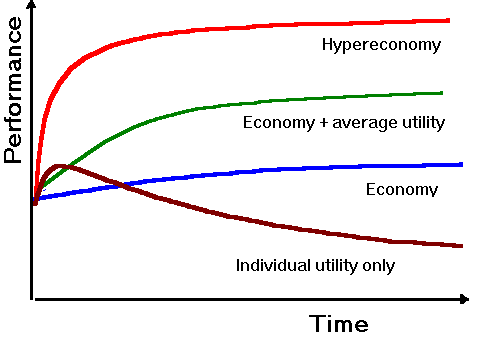

Hyper-Economy
: Combining price and utility communication in multi-agent systems
Alexander Chislenko <sasha@media.mit.edu>
Madan Ramakrishnan <madan@mit.edu>
Society of Mind group, MIT Media Lab
ABSTRACT
Symbolic communication mechanisms played a significant part in the evolutionary process by allowing plants, animals and humans to exchange personal experiences and thus turning collections of relatively isolated organisms into adaptive distributed cognition systems. A crucial role in this process belongs to schemes of aggregating and generalizing individual experiences and utilizing the obtained knowledge for optimization of behavior of individual agents. Most recently, money as aggregate symbolic representation of value allowed efficient distribution of economic information in the society. By providing aggregated information on comparative values of goods and services to participants with bounded interests and rationality, the economic signaling mechanisms give them incentives to adjust their consumption and production efforts in accordance with the collective requirements of all other agents in the system. This allowed the complexity of the value exchange system to increase by orders of magnitude, while improving its adaptability.
With still greater complexity and scale of the system, it becomes crucially important to assure that the agents focus on the right tasks, form reasonable expectations of the utility of various goods and services, and set up stable and mutually beneficial relationships with each other. These focusing and utility assessment mechanisms have been traditionally provided by individual experiences and unmediated sharing of knowledge, similar to value exchange mechanisms before the appearance of money. Further progress of signaling instruments depends on availability of standardized semantic descriptions of quality and utility of various resources, and needs and abilities of different agents. It also requires efficient methods of data acquisition, aggregation and analysis, and low-cost communication and processing tools. All these parts are now coming into place.
We are presenting an example of such a collection of signaling instruments. The suggested model of a "hyper-economic" system combines flows of globally aggregated scalar information on prices with mechanisms for sharing knowledge about situational utilities of groups of resources. The project presents methods for combining value and utility signaling mechanisms, introduces non-scalar representations of common experiences analogous to derivative financial instruments and researches their efficiency in different types of economics environments.
The new signaling instruments are aimed to aid individual agents in optimizing their behavior by using available knowledge for assessing expected personal costs, risks, and utilities. At the same time, more complex signaling tools and automated semantic transports may allow the whole system to progress to higher levels of complexity, efficiency, and adaptability, and develop explicit global cognitive mechanisms, forming rudimentary reflective consciousness and self-awareness of the system.
Types of multi-agent systems
There are two basic approaches to classification of multi-agent systems. One is based on the appearance. From this point of view, one can distinguish an ecosystem, an organism, an economy, a society, a colony, a software system, etc. These distinctions are largely phenomenological. One can often encounter statements like "Earth/Gaia is one super-organism". Some of these analogies seem quite reasonable. For example, a communist economy may be similar to an integrated organism, as its parts work directly on the central order, and the role of financial flows is reduced to assist the centralized regulatory mechanism. A contract economy looks much like a forest ecology, except that agents get locked into relationships by contracts, not niches, and some other manifestations of subsystems’ intelligence.
With all attractiveness of such comparisons, they are not very productive, as there are no good definitions for types of systems that should be regarded as an economy, an organism, or a society. Similarly, people have different perceptions of goals and virtues of observed systems. An ecosystem supposedly "just lives" and should be stable and diverse, an enterprise is called to maximize production and should be efficient and safe, and a social formation is expected to be fair and moral, and keep its members secure and happy.
However, such perceptions often represent just wish lists rather than understanding of evolutionary origins of these systems, or imperatives of their internal functional dynamics.
The functional approach classifies multi-agent systems by their overall complexity, internal control methods, structure and viscosity (transport capacities) of the communications space, methods of connecting agents into stable working groups (mutual specialization, physical coupling, force, emotional affection, ownership, contracts), diversity and intelligence of agents, particular architectural types, etc.
The functional classification allows to put system analogies on a rational foundation, helps to understand the nature and timing of system transitions and detect general trends in systems evolution, such as increase in structural liquidity and substrate independence, evolution of internal signaling mechanisms, emergence of meta-levels of organization, etc.
A general functional theory may also help to predict where new systems may have features qualitatively different from everything previously observed. For instance, space within modern communication and computing environments is effectively non-metric (it takes approximately the same time and effort to phone anybody in a country, or address any memory unit within a computer). This means that most space-related laws of all previous functional spaces would not apply to "digital" systems: there is no concept of premium location here, or differential rent, no "reproductive isolation" or other influence of space-induced separation on agents’ communication and diversity. Also digital systems often have lower replication costs of agents than execution costs, which makes them dramatically different from all systems more essentially embedded in their physical substrates. For physical entities, it’s much easier to perform a task than to transfer the necessary skills to another object. For a computer it is just copying a program. Agent deployment issues that are so fundamental for Cartesian space, seem largely irrelevant for the digital environment.
Together, these differences in essential features create a foundation for system design that is dramatically different from all previous natural and human agglomerations, in terms of agent specialization, diversity, and deployment.
Aggregate symbolic communications
We call communications symbolic when the signal is determined by an established convention rather than represents direct transfer of resources or observations of natural agents’ activities. Origins of symbolic communications can be traced as far back as bacterial colonies. A bacterium emitting a certain chemical signal relies on established convention. In many cases, it is beneficial for an agent to aggregate all received signals before forming a response. Doing this on an agent level requires gathering of many individual signals and processing of them by an agent. In many cases, however, this aggregation of signals can be performed by the message carrying environment, which makes an individual agent’s task much simpler, and also assures coherence of perception among multiple agents. For example, plants and animals respond to combined signals coming from all sources of nutrients, light, sounds, etc. Internal organs of an organism respond to combined requests of other parts for different resources, communicated through "analog" (e.g., temperature) or symbolic (hormonal) means. So here we have aggregate symbolic communications of needs, resources and opportunities.
Economy and beyond
Economic relations are based on a new class of signaling instruments. By using quantitative symbols to represent typical value relations between various objects, economy allows efficient distribution of resources in the system, and provides short-sighted selfish agents with incentives to adjust their consumption and production efforts in accordance with the collective requirements of all other agents. With time, an economy develops more complex situational regulatory instruments, such as enterprise shares, securities, voting rights, and access privileges - and then symbolic aggregate knowledge, such as popularity ratings, publications of industry trends and statistics and sample contract arrangements that have been observed to be efficient in prototypical situations.
While the economy provides its agents with accurate estimates of generic values of typical goods and services, it has little to offer to each individual agent in their attempts to estimate the utility of a certain product for their particular needs, or offer any other personalized or situational advice. This kind of knowledge is usually obtained by the economic agents in about the same way they discovered average social values of common products and services in pre-economic times: personal experience with the environment and direct communication with other agents. There are no quantitative instruments available for automated processing for this purpose.
This is understandable: comprehensive detailed data about each agent’s behavior so far has not been available in a usable form, communication and computational tools necessary for processing this data have not been adequate, transaction costs have been too high, etc. All these obstacles are now being removed in many systems.
With these tools in place, there appears a foundation for "a second signaling mechanism" in an economic system: together with conventional aggregate indicators of average costs of resources and services and their expectations, the new crop of signaling instruments may deliver suggestions of expected value that particular agents may derive in their individual situations from such resources or services. Then agents can be better equipped to optimize their behavior by using all available knowledge for comparing personal and global costs, risks, and utilities.
In an economy, these regulatory considerations stand behind the decisions of market agents, representing "the invisible hands" of the market machinery. Now, they can become publicly accessible.
Many elements of the hypereconomic signaling systems may change our familiar economic notions, such as capital, interest, efficiency, liquidity, inflation, emission rights, secondary and derivative instruments. Some of these features will remain relatively unchanged but become more liquid (faster distribution and lower transaction costs) and more efficient. Other parameters may turn from scalar to vector or a more complex structure (e.g., augmentation of the numerical representation of value of an object with a matrix of its utilities for various purposes as estimated by different agents. Some features, such as non-scalar "situational/detail derivatives" for assessing values and risks of, and balancing among, particular utilities will be entirely new.
Similar changes will happen with the concepts from social and ecological fields. Communities do not have to be local anymore, they may have variable/adaptable geometries, relations between managing and performing agencies will be redefined, new control structures and dynamic patterns arise, etc.
Some applications for hypereconomy
There may be many different systems using various aggregate representations of needs, utilities, usage suggestions, and their combinations and derivatives. The following are three simple examples to illustrate possible uses of the suggested situational utility communications.
Recommendation systems for consumer items
The price of an item, such as a book, an instrument, or a travel package, may be taken from the general catalog. The estimates of utility of this items would come from the collective experience of other people with similar needs and interests who have experience with this or similar items. Some computational constructs needed for summarizing and delivering situational knowledge, such as utility trends on item/consumer clusters, vectors of refined "eigen-preferences", etc., represent hyper-economic equivalents of secondary and derivative signaling instruments in the conventional economy.
Targeted advertising:
The same mechanisms that can advise items to consumers, may suggest potential consumers to manufacturers of these items. In the current situation, an advertiser knows the exact price of the ad delivery, but targeting of ads is usually very costly and inaccurate. As a result, most of the multi-billion-dollar advertising industry efforts miss their targets and annoy people, while knowledge of many good products doesn’t reach the individuals who may benefit from them. An advanced mechanism for combining and sharing (for a price) metabolites of advertising and sales information of all companies would result in more efficient proliferation of useful goods and services and dramatic reduction of targeting costs.
Computational heuristics:
In a large AI system, computational/royalty costs for all algorithms may be known, but it is also important to estimate the expected benefits of applying each algorithm to each problem. In an "intelligent soup" of a "market AI" system, multiple problem generators and solvers can share not just information on the current value and availability of computational resources, but also suggestions of what methods appear to be of the highest utility for what problems, and how they may be better applied.
Software model
Our first implementation of the hypereconomy model explores the situation where a large number of agents explore a large number of different resources, and attempt to maximize their utility. Both agents and resources are grouped into categories that share certain utility functions. Each agent and each resource may belong to multiple usage categories. During the model run, each agent acquires a certain amount of experience that allows it to optimize resource use. However, the individual experience is insufficient for optimal selection of resources - and especially at the beginning of the agent’s function, when it has only a limited number of encounters with a few resources. To help guide the behavior of the agent, groups of agents and resources belonging to each usage category, collect their experiences into several repositories.
On the most detailed level, there are records of experiences of individual agents with individual resources. Each record consists of the total number of agent/resource interactions, and the average result, currently a numeric value. On the next level (individual situational utility) there are records of the average performance of an agent with each category of resources, and average performance of a category of agents with each resource. The level of global individual utility contains records of global average performance of each agent and each resource, in any situation. Average situational utility records contain data on average utility of categories of agents with categories of resources.
The experience levels can be represented in the following diagram:

When estimating expected utility of a particular resource, an agent supplements its own experience with more general knowledge, relying largely on the most detailed layers with representative amount of experience.
For the first application of the model we chose an internet advertisement exchange system. The system contains thousands of participating websites. Each site displays banner ads of other sites, and has those sites display its banners in exchange. This is a very popular way of trading advertisements on the Web, with some of competing systems having membership up to 200,000 participating websites with 5 million page views per day. Selection of appropriate ads for display on each page is crucial for the performance of such a system. Appropriate ads suggest browsing users other related and interesting sites; irrelevant ads just annoy the users and waste screen space and network bandwidth. The system can greatly benefit from an automated economy as it provides a flexible and adaptive optimization mechanism. At the same time, this exchange system is also an ideal material for a model, as it provides a huge amount of symbolic data for processing, coming from millions of different users, and has clear criteria of quality (percentage of banners that were clicked on). An economic optimization model may allow different websites to bid for the right to display the banners that are most appropriate for them. However, to determine which banners are the most appropriate, the site needs to have a representative amount of displays (at least a few hundred) for each banner in the system, which means millions of ad displays for each site before it can make rational choices. This is practically impossible. The task of appropriate banner selection becomes much easier if the sites start exchanging information about their attempts to display different banners. The hyper-economic approach here consists of sharing the experience among groups of similar websites and banners (treated as resources in the system) of their interactions with each other. This allows the system to rapidly learn optimal connections between the agents and resources, quickly react to changing conditions, and maintain greater efficiency during its operation.
Results of the model test
We have tested the banner selection system with random resource allocation mechanism, a scheduling algorithm, an adaptive economic optimization mechanism, and the hyper-economic system. In the preliminary tests, the hypereconomy provided the highest adaptation rate, and greatest overall efficiency out of all tested methods.
[ We will supply comparative performance graphs for optimized versions of all algorithms in the "camera-ready" version of this paper. ]
Further development
In many cases, optimization of individual utility contradicts the goals of global optimization. A good example may be exploration tasks. The best strategy for each individual agent is to avoid using untested tools and resources until other agents have gathered some experience with them. Without rewards for exploratory activities a collection of selfish agents will suffer from "the tragedy of commons". One method to solve the problem is to introduce advisory meta-agencies that would pay individuals for exploratory activities, and own the resulting knowledge, using it for providing paid guidance to other agents. This method appears more efficient than programming generic instinctive curiosity into individual agents, as it allows coordinated gathering of social experience on a meta-agent level.
With meta-agencies collecting individual experiences and forming aggregated situational and general utility estimates, the system may evolve into a set of knowledge clusters and situational experts, with original agents turning into limited execution units, performing suggested tasks, reporting the experience, and gathering payments.
This architecture does not seem to have good analogs in biological and social systems because of their limited ability to gather and process aggregated symbolic constructs.
With vastly improved communication and data processing tools and very small transaction costs the multi-agent systems can develop greater functional granularity and fluid social architectures.
We can envision the future intelligence as a collection of highly specialized tools, with high-bandwidth interconnections, with "personalities", or complex problem solvers ("achievers", "goal engines", "research tools", "development threads") consisting of limited contractual relations between multiple problem-solving, planning, perceiving, and acting entities, that can at the same time be employed in many other similar relations. So the entities may use the same "body parts" on a cooperative or time-sharing basis.
We hope that hyper-economic schemes will eventually develop to store and process increasingly complex representations of agent interests and utilities, and have a great variety of competing intelligent algorithms for optimizing system processes, thus turning into a hybrid of an economic self-regulatory mechanism, complex multifaceted community, and distributed artificial intelligence, with secondary data representation and signaling mechanisms forming emerging self-awareness of the new systems.
It seems noteworthy that in these constructs, as well as in conventional economy, the meta-signaling [generalized/abstract in relation to actual "field agents"] level is represented in terms of signal currents in the semantic space rather than crisp symbolic constructs. We can interpret this as a sign that the connectionist approach is natural for a fetal stage of any system intelligence. Or, that a combination of symbolic processing with signal flow patterns may extend the human balance of symbolic reasoning and intuition to further levels of intelligence.
References
More information on the hypereconomy project and references to related materials are available on the Hypereconomy Development Group page at
http://www.lucifer.com/~sasha/HEDG/HEDG.html